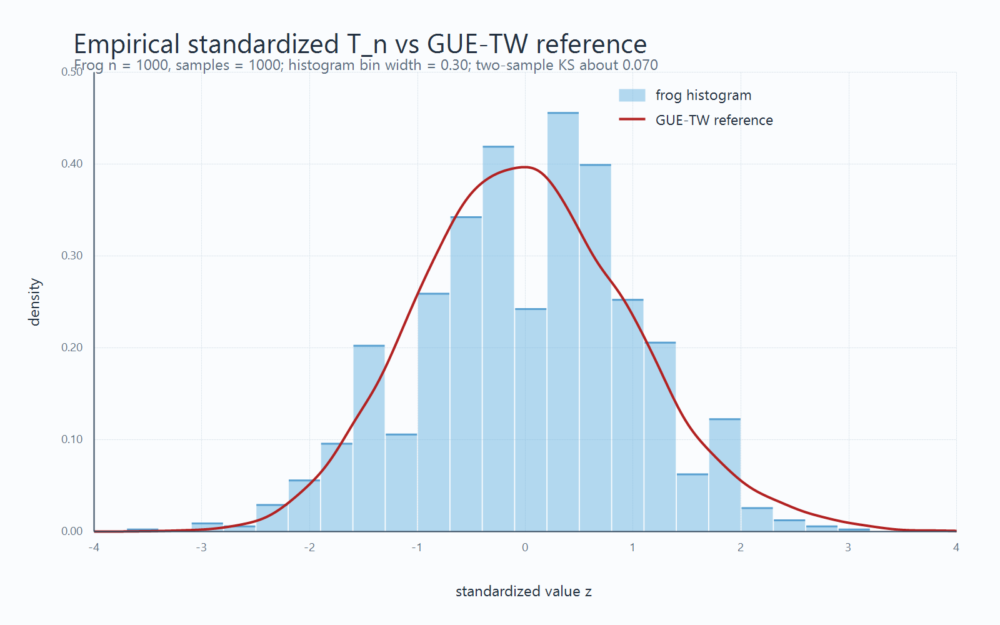

We consider simplified models and analyze them.
Despite different rules, the large-scale behavior obeys the same law.
1Consider different random experiments:
KPZ universality conjecture (1986)
Random growth processes exhibit universality.
In this talk, we introduce two models, the frog model and KS infection, to explain this universality.
A cell colony grows by randomly filling adjacent empty sites.
4At each step, the particle moves to one of its four neighbours (up, down, left, or right) with equal probability $1/4$.
A model of infection (or information) spreading on grid:
A variant of the frog model where all frogs move:
All frogs move.
Let \(T_n\) be the first time that an infected frog visits \((n,0)\). \[ \mathrm{SD}(T_n)=\text{standard deviation of } T_n \;\sim\; n^{\,1/3} \quad \text{?} \]

Only infected frogs move. A sleeping frog is activated when an infected frog visits its site.
$\mathrm{SD}(T_n) \ll \sqrt{n}$
Hao and Nakajima
Both infected and healthy particles move. Infection occurs when they meet.
$\mathrm{SD}(T_n) \ll n$
Kesten and Sidoravicius
This is important because it lets us predict future phenomena without experiments or a detailed analysis of the microscopic rules.